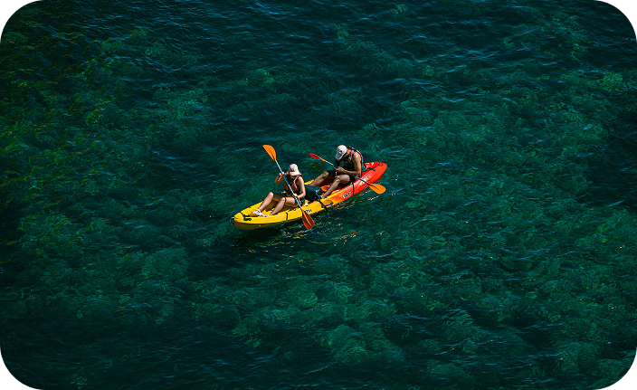

VIVI IL MARE DI ORTIGIA
Tour in barca
Prevede l’esplorazione dell’isola via mare, spesso con visita alle grotte marine e alle scogliere.
Tour al tramonto
Navigazione serale con vista romantica della città illuminata, spesso abbinata ad aperitivi.
Tour culturali e naturalistici
Alcuni operatori offrono delle esperienze che uniscono la narrazione storica ai paesaggi naturali.
Degustazioni a bordo
L'Aperitivo in barca include vino, prosecco e stuzzichini tipici siciliani come formaggi, olive, salumi e prodotti locali.
Pranzo a bordo
Piatti tradizionali serviti durante la navigazione, vino ed specialità di pesce o cucina siciliana.
Degustazioni di vini locali
Alcuni tour propongono assaggi guidati di vini del territorio.
ESCURSIONE IN KAYAK
Un modo divertente, silenzioso e sostenibile per scoprire la costa di Ortigia dal mare. Accompagnati da guide esperte, potrai esplorare grotte marine, piccole calette nascoste e scogliere ricche di fascino.
L’esperienza è adatta anche a chi è alle prime armi ed include soste per nuotare o fare snorkeling in autonomia. Ideale per chi cerca un contatto autentico con la natura, tra sport leggero e relax.

SNORKELING E IMMERSIONI
A pochi minuti da Ortigia si trova la Riserva Marina del Plemmirio, una delle aree marine protette più affascinanti della Sicilia. I suoi fondali ospitano una grande varietà di fauna marina, pareti rocciose, grotte sommerse e praterie di posidonia.
È il luogo ideale per fare snorkeling o immersioni guidate, anche per principianti, grazie alla limpidezza dell’acqua e alla presenza di centri diving ben attrezzati.
